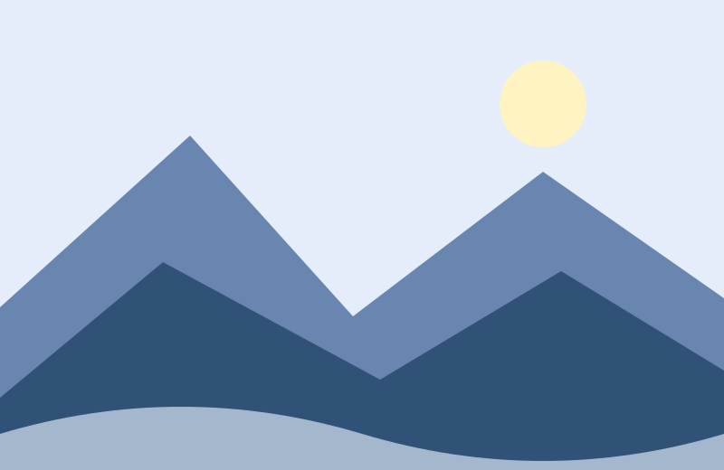

Detyra 36 · HTML / CSS / JavaScript
Karusel imazhesh
Katër ilustrime lokale me navigim manual. Karuseli nuk lëviz vetë.

Imazhi 1 nga 4
Detyra 36 · HTML / CSS / JavaScript
Katër ilustrime lokale me navigim manual. Karuseli nuk lëviz vetë.

Imazhi 1 nga 4